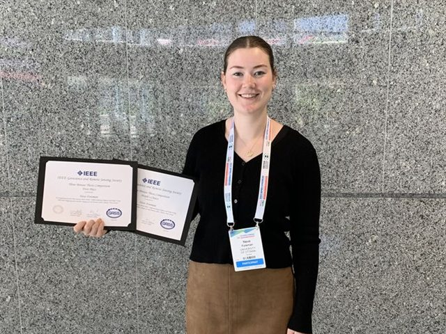

What we do
We primarily develop, test and apply Earth Observation techniques to better map, monitor and understand shallow aquatic systems and support their sustainable management. We work with data collected from satellites, manned aircraft and drones, and do fieldwork to assess the quality of our products. In addition, we do a large amount of other remote sensing research, including on retrogressive thaw slumps, pollinator insects, lava flows, and ticks!
Research themes
All research →Six themes connect our projects, from method development to operational applications.
Satellite-derived bathymetry
Water depth from optical and lidar satellites, with a focus on the Canadian Arctic.
Habitat mapping
Kelp, seagrass, coral and other benthic habitats from imagery and field data.
Water quality monitoring
Optically active constituents and turbidity tracked through satellite time series.
Change detection
Multi-decadal archives used to quantify change in depth, habitat and water quality.
Self-supervised learning
Representation learning on unlabelled Earth observation data.
Whale detection
Satellite-based detection of North Atlantic right whales for conservation alerts.
Recent news
-
July 2026 Anders Knudby, Neve Foreman, Galen Richardson and Mohsen Ansari attended the ISPRS 2026 Congress in Toronto. Neve won both First Place and the People’s Choice Award in the IEEE GRSS Three Minute Thesis competition for her talk on differentiating eelgrass and kelp with PRISMA hyperspectral imagery.

- December 2024 – January 2025 Two of our graduate students successfully defended their PhD theses. Dr. Kutalmis Saylam now works at the University of Texas, and Dr. Yulun Wu is doing a postdoc at the University of Toronto.
Interested in joining the lab?
We regularly welcome new MSc and PhD students, postdoctoral fellows and visiting researchers with an interest in aquatic remote sensing. If our work interests you, get in touch.